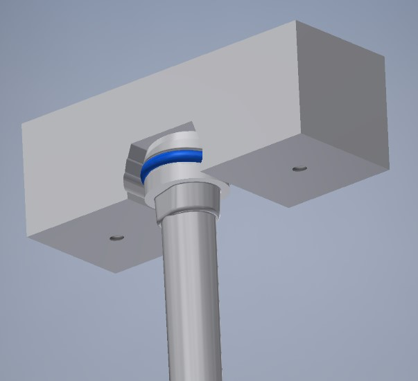
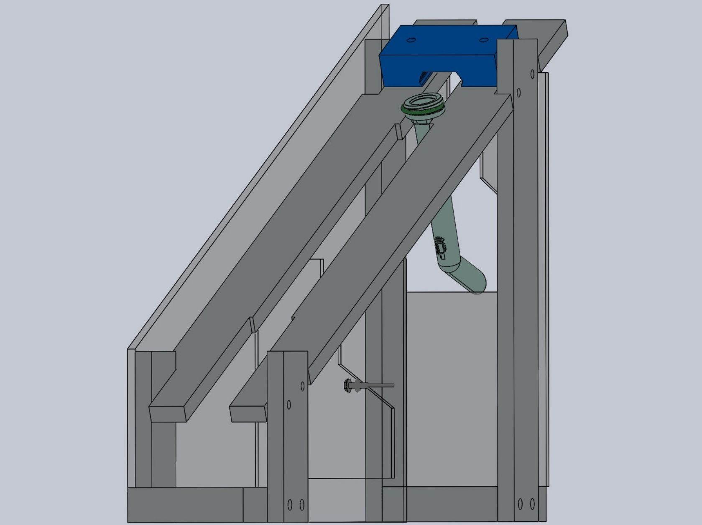
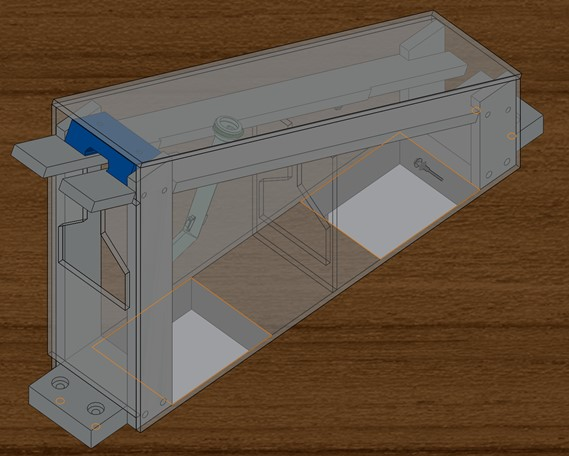

Go/No-Go Gauge
Designed and built a go/no-go gauge to prevent the shipment of PCV tubes without O-rings to OEMs.
System Overview

Go/No-Go Gauge fixed to a workstation
Gauge 'Filter'
The profile of PCV tubes with the O-ring correctly installed was modeled into a 3D Printed block. This block was placed at the entrance of the gauge to ensure only tubes with O-rings correctly installed could enter the gauge.
Separation
Tubes without O-rings effectively had a smaller overall diameter and did not make it to the end of the gauge.
Sensing
The gauge was completely enclosed in plexiglass and fiber optic sensors were installed to ensure the gauge was being used correctly.